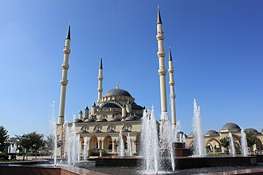

Voorstelling
La mosquée Akhmad Kadyrov est l'un des principaux édifices islamiques de la ville de Grozny, la capitale de la république de Tchétchénie en Russie.
مسجد أحمد قديروف والمعروف أيضا بمسجد قبة غروزني المركزي هو مسجد بني على اسم الرئيس الشيشاني أحمد قديروف، يقع المسجد في مدينة غروزني عاصمة الشيشان بعد هدم موقع مبنى قصر غروزني الرئاسي إبان حرب الشيشان عام 1994.
The Akhmad Kadyrov Mosque is located in Grozny, the capital of Chechnya. The mosque is one of the largest in Russia and is officially known as "The Heart of Chechnya".
Ahmet Kadirov Camii, Rusya'nın Çeçen Cumhuriyeti'nin başkenti Grozni'de bulunan bir camidir. 2008 yılında tamamlanmış olup Rusya'nın en büyük camilerinden biridir ve Çeçenistan'ın Kalbi olarak da bilinmektedir.
Masjid Katedral Ahmad Kadyrov, atau lebih dikenal dengan Masjid Jantung Chechnya (bahasa Rusia: [Се́рдце́ Че́чни ме́че́ть] Galat: {{Lang}}: text has italic markup adalah sebuah kompleks masjid bersejarah yang terletak di kota Grozny, Republik Chechnya, Rusia. Masjid ini dinamai berdasarkan Ahmad Kadyrov, presiden pertama Republik Chechnya atau ayah dari presiden republik saat ini, Ramzan Kadyrov. Masjid ini awalnya dibangun atas perintah Wali kota Konya, Turki.
قدیروف مسجد چیچنیا کے دار الحکومت گروزنی میں واقع ہے۔ یہ روس کی سب سے بڑی مساجد میں سے ایک ہے اور اسے باضابطہ طور پر "چیچنیا کا دل" کے نام سے جانا جاتا ہے۔
Die Achmat-Kadyrow-Moschee in der tschetschenischen Hauptstadt Grosny ist die größte Moschee Russlands.
La moschea Akhmad Kadyrov è ubicata a Groznyj, la capitale della Cecenia, ed è una delle più grandi moschee presenti in Russia. È conosciuta anche con il nome di "Il Cuore della Cecenia".
A Mesquita Akhmad Kadyrov, também conhecida como Mesquita Central Grozny, é uma mesquita construída em Grozny, capital da Chechênia. Seu nome é em homenagem ao presidente checheno Ahmed Kadyrov.
De Hart van Tsjetsjenië-moskee, ook wel de Achmat Kadyrov-moskee, is een moskee in Grozny, de hoofdstad van Tsjetsjenië.
Мечеть «Сердце Чечни» имени Ахмата Кадырова — мечеть в центре Грозного, одна из крупнейших в России и Европе. Строительство мечети было начато в апреле 2006 года и закончилось в конце октября 2008 года.
Op de kaart
Documenten en links
- Wikipédia — Français
- Wikipédia — العربية
- Wikipédia — English
- Wikipédia — Türkçe
- Wikipédia — Bahasa Indonesia
- Wikipédia — اردو
- Wikipédia — Deutsch
- Wikipédia — Italiano
- Wikipédia — Português
- Wikipédia — Nederlands
- Wikipédia — 中文
- Wikipédia — Русский
- Wikidata — Q340549
Gegevens: Wikidata (CC0), elke 3 maanden bijgewerkt. Het jaar is de oudst bekende bouwdatum van het gebouw: voor een gebouw dat later een moskee werd (zoals de Hagia Sophia), is het die van het oorspronkelijke gebouw. Foto's: Wikimedia Commons, maker en licentie op de pagina van elke foto.